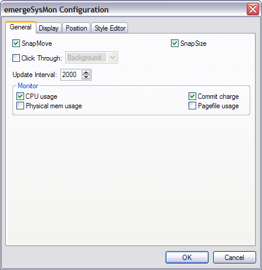
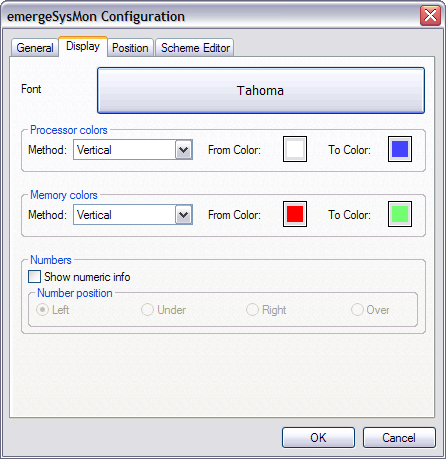
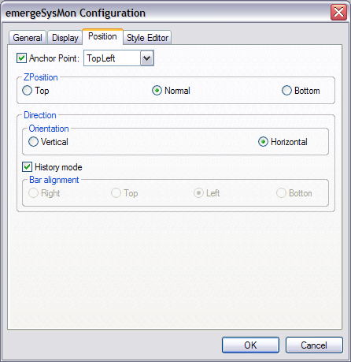

| About |
emergeSysMon reports the CPU usage, the Commit Charge, The Physical Memory Usage, and the Pagefile Usage in a a movable, resizeable window.
| Configuration |
emergeSysMon is configured by pressing the Ctrl key and right-clicking on the emergeSysMon window. This opens the configuration menu:
About displays the module's author and version and the current scheme's path and filename.
Load Scheme allows the user to browse and select a Scheme File.
Reload Current Scheme allows to reload the current scheme after editing.
Configure displays the emergeLauncher configuration dialog box.
Exit closes the module. It can be restarted by highlighting it and clicking on the Start  button in the Launch Applet dialog box (see emergeCore).
button in the Launch Applet dialog box (see emergeCore).
After selecting Configure, the configuration dialog box opens. The first tab is General:

SnapMove makes the window snap to the edges of other applets' windows or the edges of the screen when moving it.
SnapSize makes the window snap to the edges of other applets' windows or the edges of the screen when changing its size.
Click Through allows clicking "through" the window (i.e. allows clicking on whatever is behind it).
Click Through has two modes: Full (the whole window is "transparent" to mouse input), or Background (only the background area is "transparent" but the user can click on the icons in emergeTray, emergeTasks, emergeLauncher, the text in emergeCommand, emergePower, the active mini-window in emergeVWM, the graphs in emergeSysMon).
Important notes: 1) Full Click Through works for any level of opacity, from opaque to fully transparent; 2) Background Click Through automatically sets the background to transparent but does not change the scheme, this is a known limitation; 3) To manipulate an applet set on Full Click Through, the user must press the Shift key: Shift+Ctrl+LeftClick to move the applet, Shift+Ctrl+RightClick to get the configuration menu and Shift+Alt to resize the applet.
Update Interval of the system monitoring is set in milliseconds.
Monitoring is available for:
CPU Usage, which is the utilization of the central processor. For multi-processor machines, there is a graph for each processor.
Commit Charge, which is the total amount of memory used compared to the total maximum memory (i.e. the combination of physical and virtual memory).
Physical Memory Usage, which is the amount of physical RAM used (not the virtual memory usage).
Pagefile Usage, which is the amount of memory used in the Pagefile (i.e. the virtual memory usage).
The configuration dialog box's second tab is Display:

Font brings up the font dialog box, which allows to select Font, Font style and Size of the text in the emergeSysMon window:

Processor Colors of the graph (applies to CPU Usage):
Method: Defines the direction or geometry of the gradient. Options are: Solid (no gradient, uses the From Color setting), Vertical (from top to bottom), Horizontal (from left to right), CrossDiagonal (from top right corner to bottom left corner), Diagonal (from top left corner to bottom right corner), Pipecross (from corners to center drawing a 3D pipe cross), Elliptic (from border to center), Rectangle (from edges to center drawing the diagonals), Pyramid (from corners to center drawing a cross). Default is Solid.
From Color: defines the starting color for the Gradient.
To Color: Defines the ending color for the Gradient.
Memory Colors of the graph(s) (applies to Commit Charge, Physical Memory Usage and Pagefile Usage):
Method: Defines the direction or geometry of the gradient. Options are: Solid (no gradient, uses the From Color setting), Vertical (from top to bottom), Horizontal (from left to right), CrossDiagonal (from top right corner to bottom left corner), Diagonal (from top left corner to bottom right corner), Pipecross (from corners to center drawing a 3D pipe cross), Elliptic (from border to center), Rectangle (from edges to center drawing the diagonals), Pyramid (from corners to center drawing a cross). Default is Solid.
From Color: defines the starting color for the Gradient.
To Color: Defines the ending color for the Gradient.
Show numeric info adds percentage in text on Left, Under, on Right, or Over each graph.
The configuration dialog box's third tab is Position:

Anchor Point gives the choice of anchoring the window to the monitor's Top Left, Top Center, Top Right, Middle Left, Middle Center, Middle Right, Bottom Left, Bottom Center, or Bottom Right.
ZPosition defines the relative position of the window in the Z axis (i.e. from the screen to the user) and can be set to always on the Top, Normal (behaves as a regular program window), or always at the Bottom.
Vertical Orientation stacks the graphs one above the other, Horizontal Orientation puts them side by side.
History mode moves readings from left to right as they are updated. The wider the window, the more previous readings are displayed.
If History mode is not selected, each new reading can be positioned Left, Down, Right or Up of window.
For the configuration dialog box's fourth tab, see the Scheme Editor.
| Usage |
emergeSysMon reports with graphs and text the activity of four possible components of the computer as selected by the user. The tooltip reports the same information with text, preceded by the name of the component.
To move the window, the user must press the Ctrl key, left-click on the window, and drag it to another location.
To resize the window, the user must press the Alt key, left-click on one edge of the window, and drag it to a new size.
The window position and size are stored in the applet's xml file, which is located in the User Profile folder under "\Application Data\Emerge Desktop\themes", in a subfolder with the same name as the current Theme. See Theme Manager for more details.